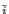

An equal superposition of states is created by the application of the well known Walsh-Hadamard operator. The matrix representing the Walsh-Hadamard operator for an n bit quantum register is a 2n x 2n matrix whose elements are defined to be: Wij = 2-n/2(- 1) . , where is the binary representation of i, and . is the bitwise dot product of the n bit strings i and j, i and j range from 0 to (N - 1), [Grover96] Put another way, Wij = 2-n/2, where the sign is positive if the bitwise AND of i and j has an even number of 1's and negative otherwise. [Grover00]
The reason the Walsh-Hadamard operator inverts the sign (or rotates
the phase  radians) in certain states is to allow it to be
reversible. We are asking for an operator which places a quantum
system in an equal superposition of states. For a classical
probabilistic system this would necessarily be a irreversible process,
as the resultant state would be the same for any input. Since the
amplitudes of a quantum state can be complex, the probability of
measuring the a system in a given state is the absolute square of the
amplitude in the given state. Thus the Walsh-Hadamard operation can
encode information in the phases of the states to make it reversible,
while still placing the register in a state where if measured any
basis state will be found with equal probability. [Grover00]
radians) in certain states is to allow it to be
reversible. We are asking for an operator which places a quantum
system in an equal superposition of states. For a classical
probabilistic system this would necessarily be a irreversible process,
as the resultant state would be the same for any input. Since the
amplitudes of a quantum state can be complex, the probability of
measuring the a system in a given state is the absolute square of the
amplitude in the given state. Thus the Walsh-Hadamard operation can
encode information in the phases of the states to make it reversible,
while still placing the register in a state where if measured any
basis state will be found with equal probability. [Grover00]
We may assume that prior to step 1 of our algorithm that our state is
prepared to be identically in one of the N = 2n basis states.
Assume that we place our register initially in the state where each of
the bits is zero, then the state vector for our n bit register is:
 = (1, 0, 0,...0)T. As a reminder, the state vector
= (1, 0, 0,...0)T. As a reminder, the state vector
 has N = 2n components, representing each of the states our
n bit quantum register can be measured in. After application of the
Walsh-Hadamard transformation the j'th element of the state vector is
W0j = 2n/2(- 1) . , note that the bitwise
dot product of the zero vector and any j vector is 0, thus the sign
of each amplitude is positive.
has N = 2n components, representing each of the states our
n bit quantum register can be measured in. After application of the
Walsh-Hadamard transformation the j'th element of the state vector is
W0j = 2n/2(- 1) . , note that the bitwise
dot product of the zero vector and any j vector is 0, thus the sign
of each amplitude is positive.
The result is an equal superposition of each state, all with positive amplitude. This was attained by performing the Walsh-Hadamard operator to the register prepared solely in the first state.
Note that this can be done for a n bit quantum register in O(n) = O(lg N) time, although to simulate this on a classical computer we must perform no less than O(N) operations. Here we see an example of the kind of exponential slowdown in classical simulation of quantum systems that Feynman observed.